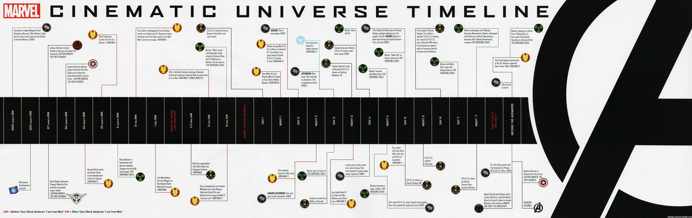

The Marvel Cinematic Universe (MCU) is an American media franchise and shared universe centered on a series of superhero films produced by Marvel Studios. The films are based on characters that appear in American comic books published by Marvel Comics. The franchise also includes several television series, short films, digital series, and literature. The shared universe, much like the original Marvel Universe in comic books, was established by crossing over common plot elements, settings, cast, and characters. Marvel Studios releases its films in groups called "Phases", with the first three phases collectively known as "The Infinity Saga" and the following three phases as "The Multiverse Saga". The first MCU film, Iron Man (2008), began Phase One, which culminated in the 2012 crossover film The Avengers. Phase Two began with Iron Man 3 (2013) and concluded with Ant-Man (2015), while Phase Three began with Captain America: Civil War (2016) and concluded with Spider-Man: Far From Home (2019). Black Widow (2021) is the first film in Phase Four, which concluded with Black Panther: Wakanda Forever (2022), while Phase Five began with Ant-Man and the Wasp: Quantumania (2023) and concluded with Thunderbolts* (2025). Phase Six began with The Fantastic Four: First Steps (2025) and will conclude with Avengers: Secret Wars (2027). Marvel Television expanded the universe to network television with Agents of S.H.I.E.L.D. on ABC in 2013 before further expanding to streaming television on Netflix and Hulu and to cable television on Freeform. They also produced the digital series Agents of S.H.I.E.L.D.: Slingshot (2016). Marvel Studios began producing their own television series for streaming on Disney+, starting with WandaVision in 2021 as the beginning of Phase Four. That phase also saw the studio expand to television specials, known as Marvel Studios Special Presentations, starting with Werewolf by Night (2022). The MCU includes various tie-in comics published by Marvel Comics, a series of direct-to-video short films called Marvel One-Shots from 2011 to 2014, and viral marketing campaigns for some films featuring the faux news programs WHIH Newsfront (2015–16) and The Daily Bugle (2019–2022). The franchise has been commercially successful, becoming one of the highest-grossing media franchises of all time, and it has received generally positive reviews from critics. However, many of the Multiverse Saga projects performed below expectations and struggled compared to those of the Infinity Saga. The studio has attributed this to the increased amount of content produced after the 2019 film Avengers: Endgame, and as of 2024, began decreasing its content output. The MCU has inspired other film and television studios to attempt similar shared universes and has also inspired several themed attractions, an art exhibit, television specials, literary material, multiple tie-in video games, and commercials.
